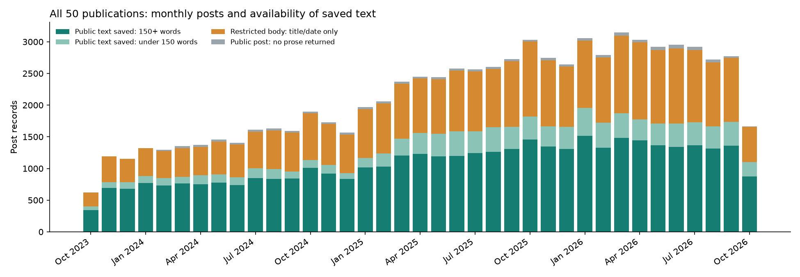
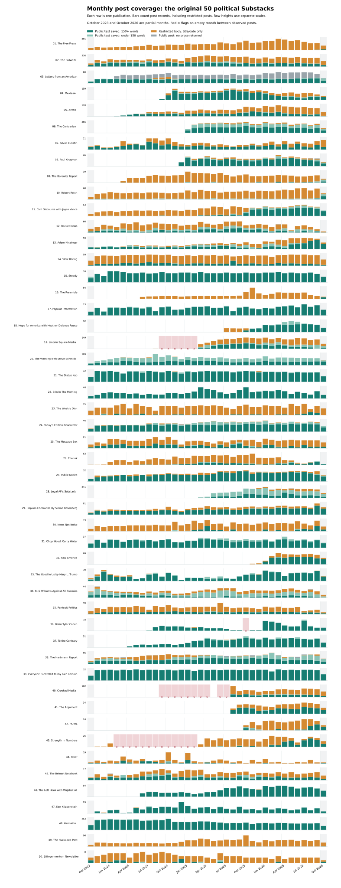

Project overview · Open all 50 rows at full size · Download the chart · Monthly counts and audit details
The 29,377 restricted posts are present as dated records. Their article text was not collected. They appear in orange below; an orange bar is not a missing month.
All 50 archive scans reached a normal endpoint: 33 crossed the start of the study period and 17 reached an empty endpoint. There are 0 missing files in the expected saved-page sequences and 0 recorded request errors. This supports a completed archive pass, but cannot prove that Substack exposed every historical post.
There are 30 empty publication-months between observed posts, across 4 publications. For all four, every in-window post identifier in the saved raw archive responses matches the database. The same months are empty in those source responses, so these flags are not caused by dropping records while parsing them. They may reflect publishing breaks or unavailable historical posts. No calendar month is empty across the full fifty-publication archive.
Window: October 18 2023–October 18 2026, New York time. The first and last months cover only part of the month. Months outside a publication’s observed posting span are not treated as known gaps. The new ranks 51–100 are still being collected and are outside these charts.

Dark green: public text of at least 150 words. Light green: shorter public text. Orange: restricted article body, with date/title saved. Gray: public post whose prose was not returned. A red × marks an empty month inside a publication’s observed span. Each row uses its own vertical scale so changes over time remain visible; row heights do not compare the size of publications. Saved text may still be a preview.

| Publication | Post records | Public text, 150+ words | Restricted bodies | Empty months between observed posts | Archive end |
|---|---|---|---|---|---|
| 1. The Free Press | 5,824 | 41 | 5,777 (99%) | None | whole page precedes window |
| 2. The Bulwark | 9,023 | 3,799 | 4,537 (50%) | None | whole page precedes window |
| 3. Letters from an American | 2,199 | 1,045 | 35 (2%) | None | whole page precedes window |
| 4. Meidas+ | 2,881 | 2,068 | 666 (23%) | None | endpoint empty |
| 5. Zeteo | 2,392 | 1,009 | 1,306 (55%) | None | endpoint empty |
| 6. The Contrarian | 4,768 | 2,786 | 394 (8%) | None | endpoint empty |
| 7. Silver Bulletin | 430 | 259 | 171 (40%) | None | whole page precedes window |
| 8. Paul Krugman | 763 | 599 | 86 (11%) | None | endpoint empty |
| 9. The Borowitz Report | 801 | 26 | 748 (93%) | None | endpoint empty |
| 10. Robert Reich | 1,718 | 70 | 1,512 (88%) | None | whole page precedes window |
| 11. Civil Discourse with Joyce Vance | 1,456 | 531 | 812 (56%) | None | whole page precedes window |
| 12. Racket News | 1,502 | 371 | 824 (55%) | None | whole page precedes window |
| 13. Adam Kinzinger | 1,082 | 544 | 329 (30%) | None | whole page precedes window |
| 14. Slow Boring | 1,972 | 430 | 1,533 (78%) | None | whole page precedes window |
| 15. Steady | 488 | 485 | 0 (0%) | None | whole page precedes window |
| 16. The Preamble | 1,000 | 38 | 942 (94%) | None | endpoint empty |
| 17. Popular Information | 595 | 578 | 0 (0%) | None | whole page precedes window |
| 18. Hope for America with Heather Delaney Reese | 854 | 669 | 110 (13%) | None | endpoint empty |
| 19. Lincoln Square Media | 2,450 | 779 | 1,245 (51%) | 2024-09, 2024-10, 2024-11, 2024-12, 2025-01, 2025-02 | endpoint empty |
| 20. The Warning with Steve Schmidt | 2,611 | 1,307 | 18 (1%) | None | whole page precedes window |
| 21. The Status Kuo | 1,063 | 1,034 | 3 (0%) | None | whole page precedes window |
| 22. Erin In The Morning | 793 | 792 | 0 (0%) | None | whole page precedes window |
| 23. The Weekly Dish | 421 | 27 | 393 (93%) | None | whole page precedes window |
| 24. Today's Edition Newsletter | 1,280 | 1,020 | 41 (3%) | None | whole page precedes window |
| 25. The Message Box | 527 | 175 | 341 (65%) | None | whole page precedes window |
| 26. The.Ink | 1,197 | 191 | 968 (81%) | None | whole page precedes window |
| 27. Public Notice | 871 | 758 | 102 (12%) | None | whole page precedes window |
| 28. Legal AF's Substack | 3,207 | 1,098 | 378 (12%) | None | endpoint empty |
| 29. Hopium Chronicles By Simon Rosenberg | 1,756 | 1,323 | 405 (23%) | None | whole page precedes window |
| 30. News Not Noise | 438 | 53 | 382 (87%) | None | whole page precedes window |
| 31. Chop Wood, Carry Water | 954 | 854 | 0 (0%) | None | whole page precedes window |
| 32. Raw America | 569 | 401 | 160 (28%) | None | endpoint empty |
| 33. The Good in Us by Mary L. Trump | 761 | 683 | 33 (4%) | None | whole page precedes window |
| 34. Rick Wilson’s Against All Enemies | 988 | 224 | 304 (31%) | None | whole page precedes window |
| 35. Pantsuit Politics | 1,510 | 480 | 1,007 (67%) | None | whole page precedes window |
| 36. Brian Tyler Cohen | 178 | 168 | 1 (1%) | 2025-10 | endpoint empty |
| 37. To the Contrary | 959 | 889 | 3 (0%) | None | endpoint empty |
| 38. The Hartmann Report | 2,554 | 1,337 | 422 (17%) | None | whole page precedes window |
| 39. everyone is entitled to my own opinion | 1,098 | 1,095 | 0 (0%) | None | whole page precedes window |
| 40. Crooked Media | 1,018 | 308 | 652 (64%) | 2024-09, 2024-10, 2024-11, 2024-12, 2025-01, 2025-02, 2025-03, 2025-04, 2025-06, 2025-07 | endpoint empty |
| 41. The Argument | 400 | 224 | 171 (43%) | None | endpoint empty |
| 42. HOWL | 235 | 45 | 183 (78%) | None | endpoint empty |
| 43. Strength In Numbers | 359 | 106 | 249 (69%) | 2024-02, 2024-03, 2024-04, 2024-05, 2024-06, 2024-07, 2024-08, 2024-09, 2024-10, 2024-11, 2024-12, 2025-01, 2025-02 | whole page precedes window |
| 44. Proof | 183 | 39 | 140 (76%) | None | whole page precedes window |
| 45. The Beinart Notebook | 405 | 160 | 202 (50%) | None | whole page precedes window |
| 46. The Left Hook with Wajahat Ali | 1,523 | 1,492 | 2 (0%) | None | endpoint empty |
| 47. Ken Klippenstein | 429 | 424 | 2 (0%) | None | endpoint empty |
| 48. Wonkette | 7,032 | 6,872 | 0 (0%) | None | whole page precedes window |
| 49. The Huckabee Post | 1,636 | 12 | 1,622 (99%) | None | whole page precedes window |
| 50. Ettingermentum Newsletter | 187 | 18 | 166 (89%) | None | whole page precedes window |
The restricted-body category is supported by audience metadata: 29,072 records marked only_paid, 264 marked founding and 41 marked only_subscribers. We did not test paid access. Continuous metadata collection is different from having every article’s full text, and this check does not establish complete comments.
Text access is uneven across writers. About 99% of post records for The Free Press and The Huckabee Post have restricted bodies, compared with none for Popular Information or Wonkette. A continuous series of post dates does not eliminate this source of selection bias. Analyses of article positions must report text availability by publication and month, rather than treating the available text as a complete or balanced sample.